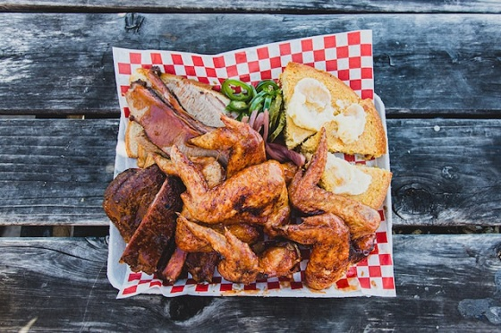
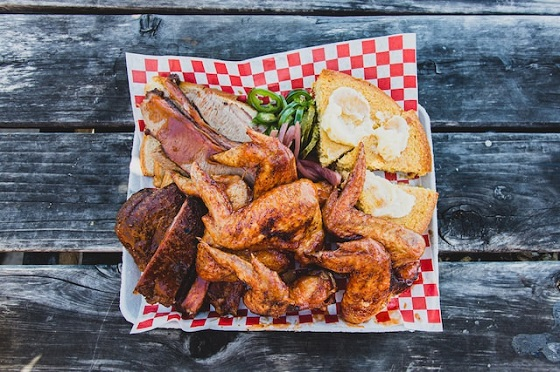

Smoke Signals BBQ
At Smoke Signals BBQ, we believe that BBQ is a beautiful world that deserves to be explored and celebrated. Our mission is to inspire and educate people about the rich history, diverse flavors, and unique techniques of BBQ from all around the world. We're passionate about showing people that there's more to BBQ than just grilling meat over an open flame.
Our team of experts has spent countless hours studying and experimenting with different BBQ styles and methods, and we want to share our knowledge and expertise with others. From traditional American BBQ to Korean and Brazilian BBQ, we're fascinated by the different ways that people around the world have adapted BBQ to suit their local ingredients and cultures.
At Smoke Signals BBQ, we're not just about cooking great BBQ, we're about building a community of BBQ lovers who share our passion for this delicious and fascinating art form. So come join us on this journey, and let's explore the wonderful world of BBQ together!
Barbecue, or BBQ for short, has a long and fascinating history that dates back thousands of years. The origins of BBQ can be traced to the indigenous peoples of the Caribbean, who developed a technique of slow-cooking meat over an open flame to preserve it. This technique was later adopted and refined by African slaves brought to the United States, who developed a distinct style of BBQ that became popular in the Southern states.
Over time, BBQ has evolved into a beloved American pastime and a cornerstone of Southern culture. Different regions of the United States have developed their own unique styles of BBQ, each with its own special rubs, sauces, and cooking methods. BBQ has also spread around the world, with countries like Korea, Brazil, and Australia adapting the art form to suit their local ingredients and tastes.
Today, BBQ is celebrated for its rich history, diverse flavors, and unique techniques, and it remains a popular form of cooking and socializing. Whether you prefer traditional American BBQ, Korean BBQ, or something in between, there's no denying the allure of this delicious and fascinating art form.
 
